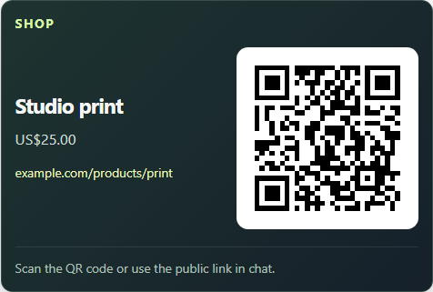
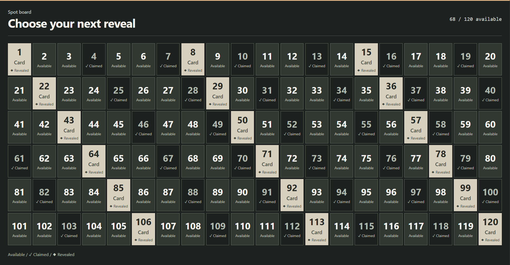
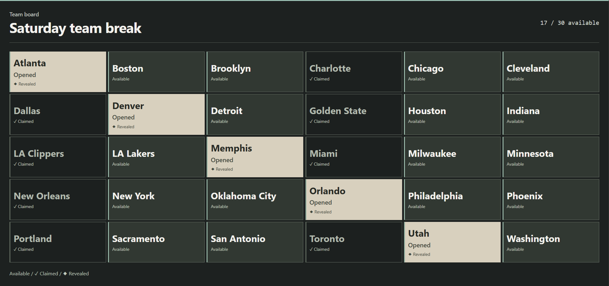
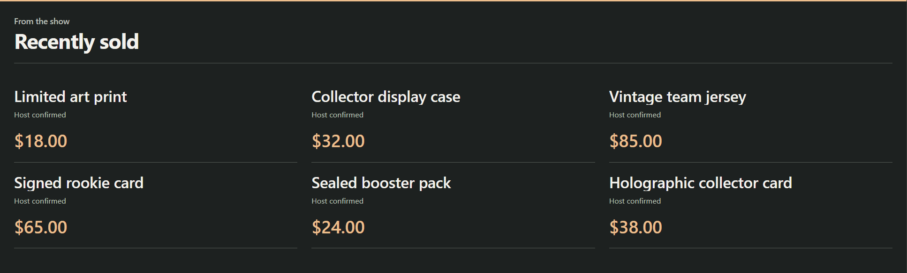

Preview ↗Guides / Commerce
Commerce overlays
Products, available spots and recent sales. Choose what your audience needs to see.
Choose a display
These previews use sample data.

Preview ↗02 / Reveal board
Numbered spot board
A numbered board, up to 20 × 6. Mark a claim, then reveal its assigned item.
Set it up →
Preview ↗
Preview ↗04 / Recent sales
Recent sales
Show recent purchases as a list, a wall or a compact strip. Add a price when you know it.
Set it up →Three steps
Connect to OBS
- Choose your displayOpen Monetization in the SSN popup. Add a product, connect a store, or open Spot boards & recent sales.
- Save, then copy its linkUse Save setup for providers. Board controls save immediately. Copy the display’s OBS link.
- Add an OBS Browser SourcePaste the link. Start at 800 × 600 for a product card, or 1920 × 1080 for a board. Keep SSN running.
Only the display goes on stream. Control it in SSN; an OBS control dock is optional.
Products & support links
Products and support links
- Add a public link, a name and an optional image or price.
- Choose Shop, Gift, Support or Join, then save.
- Use Show / Next / Hide / Resume to control the showcase.
A product link promotes an item. Connect the store separately for purchase alerts.
QR codes, rotation and display options
Save up to 20 public links. Pin one or rotate; each stays visible for at least 15 seconds. Share the public link in chat too, for viewers watching on a phone.
Choose Showcase, Support card or Activity alerts for separate OBS sources. Compact style, scale, corner and timed display are under Overlay link options. Manual prices are snapshots; purchases do not remove manual products.

Connect what you use
Store and payment connections
Shopify & creator stores
Import products and connect purchase alerts.
Shopify guide →Fourthwall & other stores →
eBay seller
Connect your seller account, add your listings and display products or paid-purchase alerts.
Preview →How sales and auctions differ
Only the connected seller’s paid orders can produce purchase alerts. A bid, ended auction or stock change does not prove payment. Prices refresh about once a minute.
The first purchase removes that selected listing from showcase rotation. Further purchases still alert. Buyer identity is omitted; refunds do not reopen entries. Seller connection requires the SSN eBay service to be available.
Throne gifts
Enter your username, save, then paste SSN’s Webhook URL into Throne.
Preview →Gift ranks and contributions
Completed gifts raise your rank. Contributions show an alert; rank rises when the gift is fully funded. SSN does not guess which wishlist item was bought.
Keep SSN connected. Rank is local to this installation; refunds and cancellations do not reverse it. Anonymous gifts remain anonymous.
Throne webhook setupAmazon wishlist
Load a public wishlist. Confirm purchases yourself to advance the cheapest-first ladder.
Preview →Import and confirmation
Review imported prices and missing items; use manual entry if import fails. Removing an item from Amazon does not prove a purchase. Use one currency per ladder.
After checking the purchase, choose Confirm current item bought. Undo covers the last confirmation during the current SSN run. Review your wishlist’s public sharing and address settings.
NinjaBacker tips
Connect Stripe at NinjaBacker. Enter your username and private Tip ID in SSN.
Preview →Live feed or reliable webhook?
Live feed is the simplest setup. Reliable webhook queues signed tips for up to seven days, including while SSN is off. Follow the setup prompts and send a dashboard test tip.
The private Tip ID stays out of overlay URLs. Anonymous tips stay anonymous. Refunds do not reverse alerts or rewards.
NinjaBacker delivery guideA simple support link
Use a support card with any public tipping, gift or membership link.
Preview →No account connection is needed to display the link. Payment alerts need a supported connection.
Purchase alerts and automation
Celebrate a purchase
Give a sale its own sound or image.
Alert effects →Print a thank-you
Use available product details on a label in the Windows app.
Printer guide →Automate the next step
Match the provider and event in Event Flow.
Event Flow →Event and delivery details
Use Event Type for purchase, gift, giftcontribution or giftfunded. Donation matches hasDonation. Completed crowdfunding is a milestone, not another payment. Manual board/sales edits never trigger purchase rewards.
Start with one sound path per event. Announcements are opt-in. Shopify and eBay omit buyer identity; print product details instead. Delivery feedback does not prove OBS visibility, paper output or fulfillment. Control feedback.